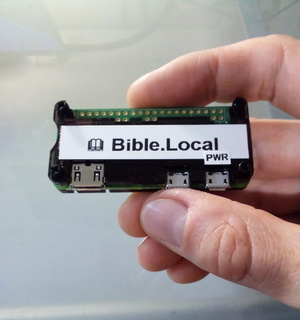

What is Bible.Local?

- WiFi server sharing BibleSD content
- 1,300 Bible translations in 900 languages
- OpenBible interlinear Hebrew & Greek

| 1. | Obtain a Raspberry Pi Zero W 2 or Raspberry Pi 4 |
| 2. | Obtain a 64GB (or larger) microSD card |
| 3. | Download the image file |
| 4. | Write the image file to the microSD card using a program like: |
|
|
| 5. | insert the microSD card |
| 6. | Connect power and wait 2-3 minutes |
| 7. | Connect a mobile device or computer to: SSID: Living-Water password: John4-14 |
|
Note: The default login for the server itself (not WiFi) is: username: servant password: (John13:13-17) To change the password, use the following commands in a terminal: $ ssh servant@bible.local$ passwdWhile it's always possible to delete or change files by removing the card and inserting into another computer, changing the server password is helpful to block remote login, for example through the Living-Water wireless network. |
| 1. | Obtain a micro USB OTG adapter. |
| 2. | Obtain one or more microSD card readers. |
| 3. | Before connecting microSD cards or flash drives, verify the Bible.Local server is powered ON and the Living-Water WiFi network is available. |
| The duplication tool will display only drives or media connected after startup. This ensures the boot drive cannot be accidentally overwritten. |
| 4. | Connect the OTG adapter and microSD cards and readers as shown. |
| For BibleSD media, USB flash drives (32GB or larger) can be used and connected directly. | |
| 5. | Browse to either http://bible.local:7000/biblesd (BibleSD) or http://bible.local:7000/biblelocalsd (Bible.local) and click the corresponding Start button. |
| 6. | Click Refresh Device List to view attached devices and writing progress. |
| 7. | Remove the corresponding media after Complete is displayed. |
|
Note: Default login credentials: username: servant password: (John13:13-17) It's recommended that you first log in and change the password: $ ssh servant@bible.local$ passwdThe new login credentials will be carried over to any new Bible.local servers that are cloned. |